TabICL：大样本表格的上下文学习
Jingang Qu、David Holzmüller、Gaël Varoquaux、Marine Le Morvan
版本范围：2025年原始TabICL，PMLR 267，50817–50847。
分类模型。本文结论不自动适用于后续TabICLv2。
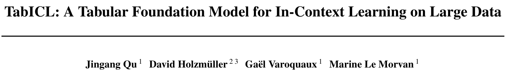
TabICL：大样本表格的上下文学习
Jingang Qu、David Holzmüller、Gaël Varoquaux、Marine Le Morvan
版本范围：2025年原始TabICL，PMLR 267，50817–50847。
分类模型。本文结论不自动适用于后续TabICLv2。
一、输入、列嵌入、行交互与上下文预测
二、合成先验、课程训练与内存调度
三、基准结果、消融、负结果与完整附录图表
四、光学及微生物检测研究的可检验方案
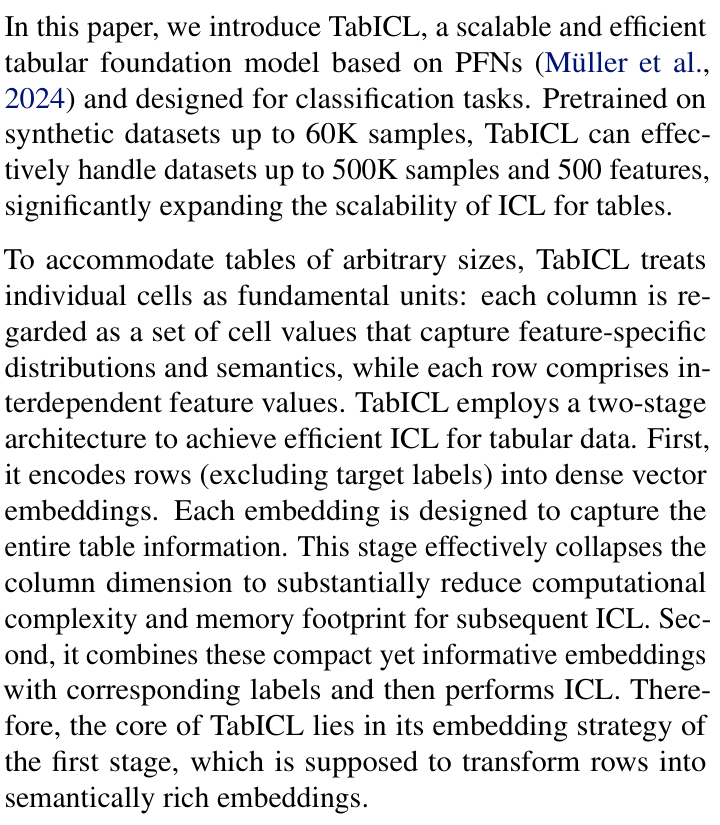
表格每行是样本、每列是特征。若对每一列重复进行跨样本注意力，样本数增加会放大计算成本。
TabICL先把每行压成固定512维向量，再在行向量间做ICL。列数不再乘到最终的样本二次项上。
压缩可能丢失任务相关信息。因此论文必须同时验证预测质量、规模增长和表示坍缩。
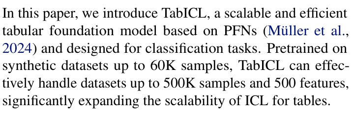
作者面向分类，用最多60K样本的合成任务预训练。这里是规模目标的概述；后面的资源测试和分类准确率实验需要分开解读。
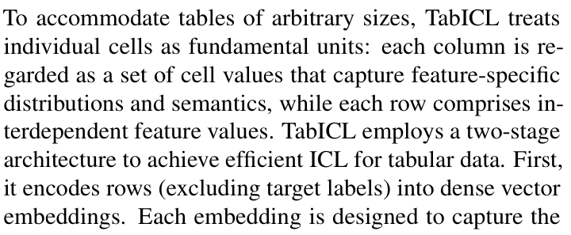
列是一组反映特征分布的单元值，行是一组相互依赖的特征。第一阶段先把不带目标标签的行编码成向量。
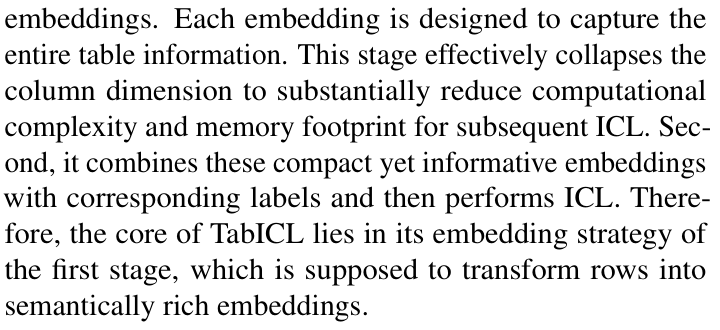
列维度先被压缩，随后才把行向量与标签结合做ICL。这样的安排减少最终注意力计算中的列数因子，压缩质量则需要实验验证。
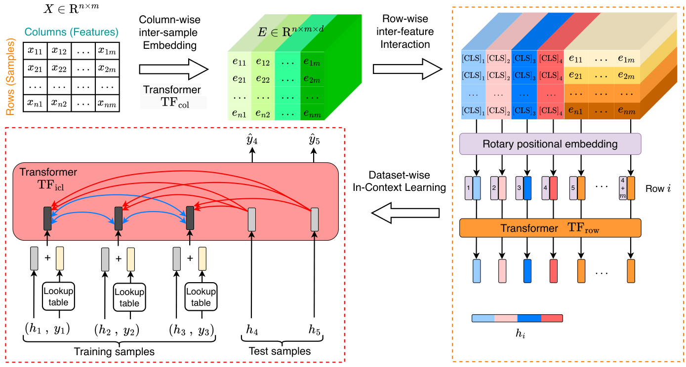
TFcol用同一列的训练样本理解该列分布，把每个标量变为128维向量。
TFrow在一行内交互各列，拼接四个CLS输出，得到512维行向量。
TFicl加入训练标签，用训练行作为上下文，为测试行输出类别概率。前两个模块不看标签。
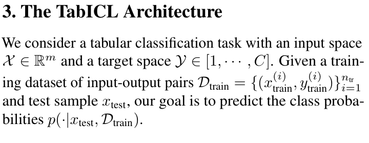
输入包括训练特征Xtrain、训练标签ytrain和测试特征Xtest。设训练行数ntr、测试行数nte、列数m，n=ntr+nte。
标签属于C个类别。最终输出是每个测试样本的C维概率向量，取最大概率可得到类别。
模型参数来自先前的合成数据预训练。对新表做预测时，不执行梯度更新。
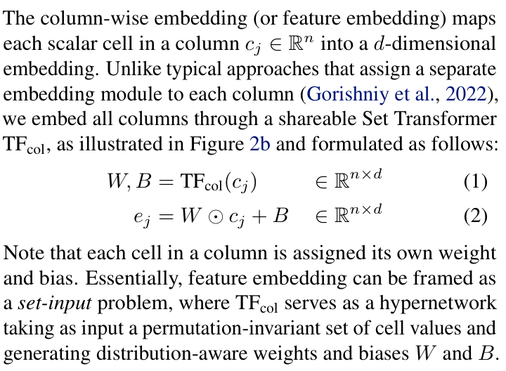
列j包含n个标量。TFcol输出W和B，形状均为n×128，每个单元拥有自己的权重向量和偏置向量。
第i个单元的嵌入为eᵢⱼ=Wᵢⱼ·xᵢⱼ+Bᵢⱼ。标量x沿128个通道广播，⊙表示逐元素乘法。
所有列共享TFcol参数，因而能接受不同列数的表格。W和B仍会随输入列的分布改变。
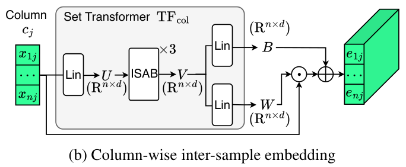
标量列先经线性层得到U。三个ISAB依次传播训练分布信息。
最后的两路线性映射分别给出W和B，再与原始标量相乘、相加得到eⱼ。
“共享参数”指不同列使用同一个网络，不表示所有单元的W、B相同。
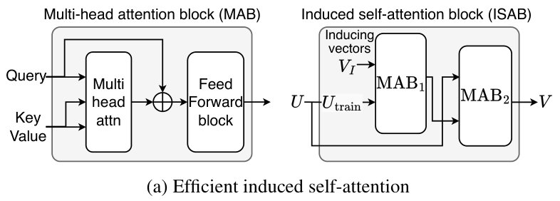
MAB是多头注意力块，图中画出残差相加和前馈模块。归一化未在此图单独标示。
第一步以128个可学习诱导向量为查询，以训练行的U为键和值，得到M。
第二步以所有行的U为查询，以M为键和值，得到V。测试行不能参与第一步的汇总。
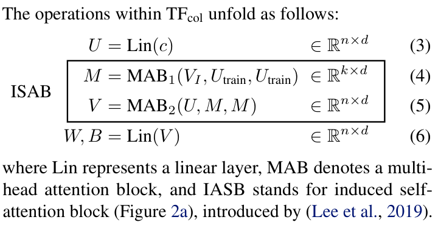
U∈ℝⁿˣᵈ，诱导向量VI∈ℝᵏˣᵈ，M∈ℝᵏˣᵈ，V∈ℝⁿˣᵈ。本文d=128、k=128。
第一步注意力矩阵大小k×ntr，第二步大小n×k。固定k时，单列计算随n线性增长。
压缩通过可学习汇总实现。它不是数学上无损地保留每一条训练记录。
为便于手算，设一个注意力头的查询对三个训练样本打分为[0, ln2, 0]。softmax后权重为[¼, ½, ¼]。
若三个值为[2,4,8]，加权输出为¼×2+½×4+¼×8=4.5。
实际MAB还有多个头、残差和前馈网络。本例只解释其中的加权求和，不是论文模型的实测激活。
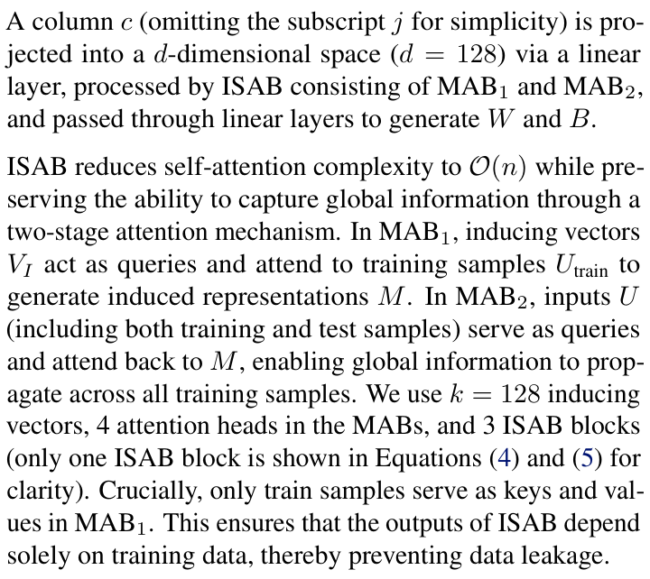
MAB₁只读取训练样本，测试值仅作为MAB₂查询。测试行的预测不应依赖同批其他测试行的值。
对训练集均值、方差或幂变换参数的估计，也应遵守训练可见范围。
真实研究中若按设备或日期划分，先划分再拟合预处理。随机打散同一批次可能掩盖设备漂移。
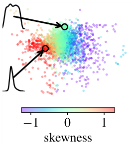
作者从合成数据取40,000个特征，将最终ISAB的M沿诱导向量求和，每列得到一个向量，再投影到两个主成分。
颜色表示偏度。相近颜色在投影中具有一定聚集，说明表示携带分布统计信息。
PCA图展示关联，不能据此证明每个通道就是偏度，也不能证明精确恢复了原分布。
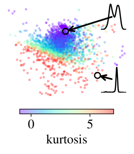
与上一页相同的一组列表示，这里用峰度着色。高峰度与较低峰度列呈现不同区域。
偏度描述不对称性，峰度与尾部形态有关。二者提供了区分列的统计线索。
图中没有报告“统计量预测误差”。因此本图只支持表示与统计属性有关。
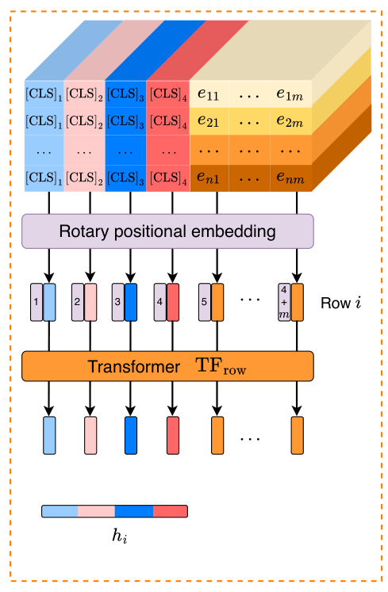
E的形状为n×m×128。对每一行加上四个可学习CLS，序列长度为m+4。
TFrow使用3层、8个注意力头，最后拼接四个CLS输出。每行固定为4×128=512维。
标签尚未进入计算。相同行向量可在不同类别分组的ICL任务间复用。
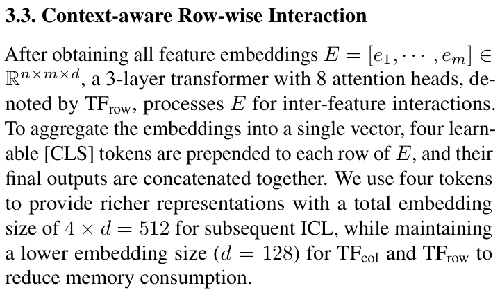
沿用5行、2列示例：列嵌入后E为5×2×128。每行加入四个CLS，TFrow处理长度6的序列。
四个输出CLS拼接后H为5×512。前三行随后加入标签编码，后两行等待预测。
实际参数值由预训练学习。本页追踪张量形状，不虚构训练后的向量数值。
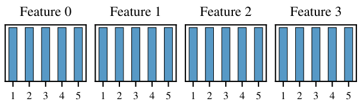
balance scale的Feature 0、1、2、3均取1到5，且四列的边缘分布相同。
如果列嵌入只依赖边缘分布，而行汇总又完全忽略列位置，交换两个不同意义的特征可能给出相同表示。
四幅直方图分别展示四列，不是四个模型。此处暴露的是特征身份不足的问题。
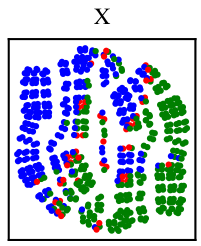
此图对原始输入X做t-SNE。颜色表示三个类别，点在二维投影中仍分散。
原始特征组合不同，即使各列直方图相同，也可能对应不同标签。
t-SNE坐标没有原始物理单位。它只能用于检查表示结构，不能替代分类准确率。
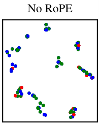
没有位置编码的TFrow输出H出现少量密集团簇，原本不同的样本失去可区分性。
完全不考虑列身份的汇总，使具有相同值集合但不同列配置的样本容易混淆。
这是论文给出的表示坍缩例子。不能把二维聚集直接当作定量分类误差。
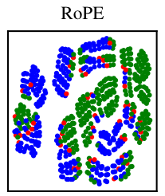
给查询和键加入列位置相关旋转后，H的t-SNE分布保留了更多样本间差异。
位置使同分布列仍可区分。代价是预测不再严格满足列排列不变性。
论文通过多次列重排集成近似恢复稳定性，没有给出对任意表的严格不变性保证。
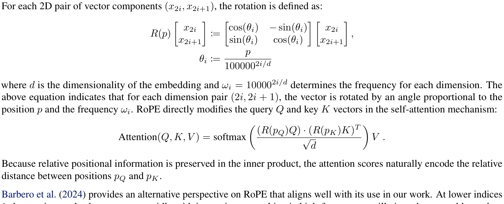
每对向量分量旋转θᵢ=p/100000²ⁱ⁄ᵈ，p为位置，i为二维分量组编号。查询与键采用各自的位置。
旋转后的点积依赖相对位置。较低维组旋转更快，较高维组变化较慢。
附录文字另出现10000的频率描述，与其公式和主文base=100000不一致。本课件沿用公式与主文，并保留这一排版差异。
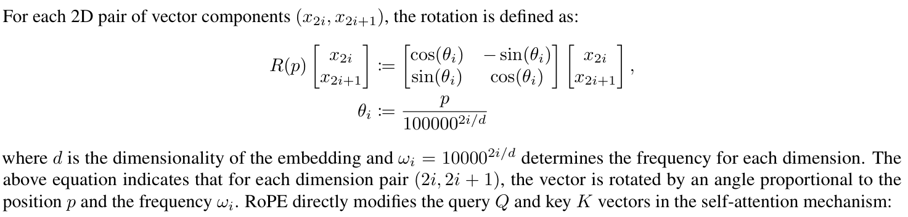
每一对分量按位置相关角度旋转。截图中角度公式用100000，下一段频率文字却写10000；本文保留这一差异，解释沿用主文与角度公式。
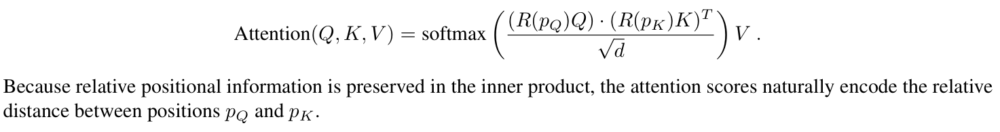
Q和K先各自按位置旋转，再计算缩放点积、softmax及对V的加权求和。相对位置通过旋转后的点积影响注意力分数。
设某二维分量为x=(1,0)，角度为π/2。旋转矩阵作用后得到(0,1)。
两个位置的查询和键分别旋转α、β。若原向量都为(1,0)，点积等于cos(α−β)。
本例仅说明相对角度如何影响分数。实际RoPE使用许多频率，输入查询与键通常也不相同。
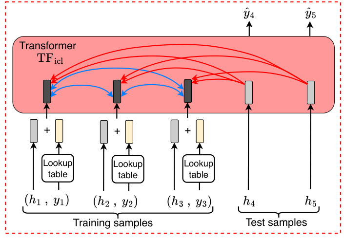
训练标签经编码映射到512维，与对应的行向量相加。测试行不含未知标签。
TFicl使用12层、4个注意力头。训练行互相注意，测试行只注意训练行。
输出经过两层MLP得到类别概率。每个测试行共享同一训练上下文。
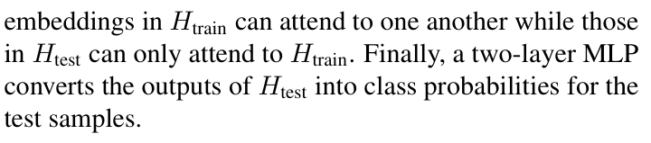
行是发出查询的样本，列是可读取的键和值。前三行为已标注训练样本，后两行为待预测测试样本。
✓表示允许读取，×表示屏蔽。训练行只能读训练行，两个测试行分别读同一个训练上下文。
这样设计阻断测试样本之间的信息传播。下表仅解释掩码，不表示注意力权重相等。
| 查询／键 | 训1 | 训2 | 训3 | 测4 | 测5 |
|---|---|---|---|---|---|
| 训1 | ✓ | ✓ | ✓ | × | × |
| 训2 | ✓ | ✓ | ✓ | × | × |
| 训3 | ✓ | ✓ | ✓ | × | × |
| 测4 | ✓ | ✓ | ✓ | × | × |
| 测5 | ✓ | ✓ | ✓ | × | × |
将实际128维简化为2维。假设当前单元x=3，列超网络根据训练分布输出W=(2,−1)、B=(0.5,4)。
逐通道计算e=W·x+B=(2×3+0.5,−1×3+4)=(6.5,1)。
换一列或换训练分布时，W和B也可能改变。这些参数为教学指定，不能视作论文模型的实测权重。
设一个二分类测试样本输出logits=[0,ln3]，softmax概率为[0.25,0.75]，预测第二类。
若真实标签为第二类，该样本Log Loss为−ln0.75≈0.288。若为第一类，则为−ln0.25≈1.386。
相同的硬分类准确率可能对应不同Log Loss。后者会惩罚对错误答案过度自信。
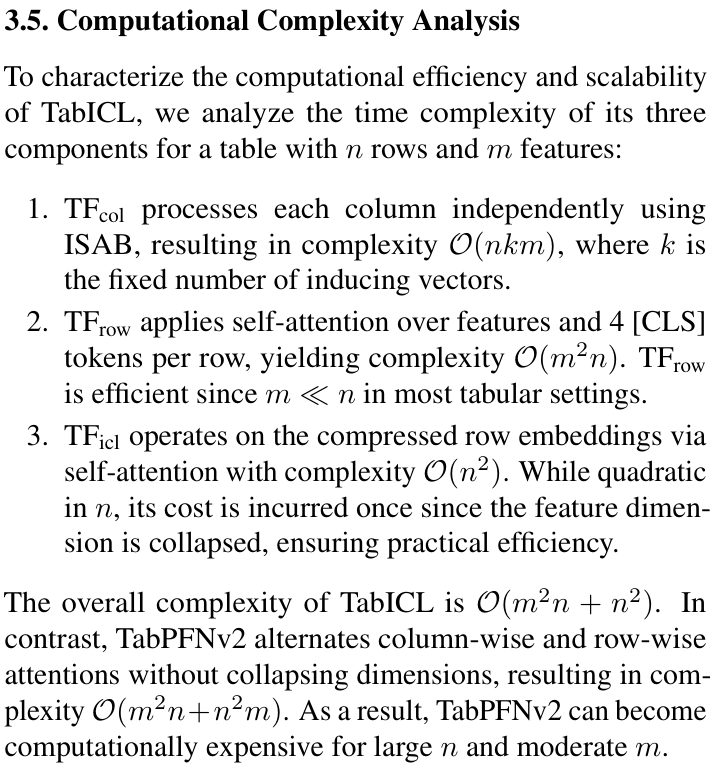
TFcol为O(nkm)，TFrow为O(nm²)，TFicl为O(n²)。固定k、维度与层数后，主文概括为O(nm²+n²)。
TabPFNv2保留列维度，其对应表达为O(nm²+n²m)。当n大、m相对较小时，TabICL更有利。
最终ICL仍随样本数二次增长。FlashAttention降低显存开销，并没有把算术复杂度变成线性。
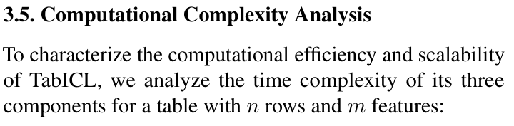
原文设一张表有n行、m个特征。复杂度比较描述规模变化，不等于在不同硬件上给出固定耗时保证。
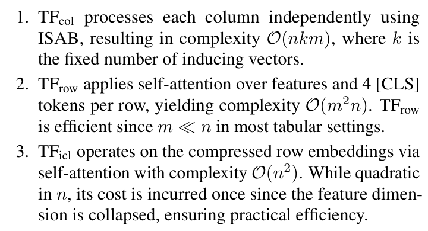
列模块为O(nkm)，k是固定的诱导向量数；行模块为O(nm²)；压缩后的ICL仍为O(n²)。原文的效率动机还依赖常见条件m远小于n。
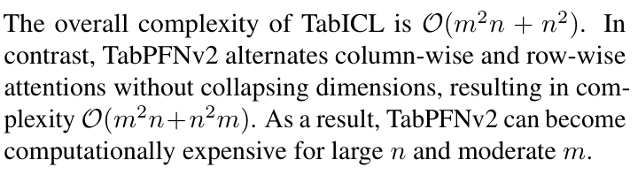
在隐藏维度、层数和k固定时，TabICL为O(nm²+n²)，TabPFNv2为O(nm²+n²m)。省去的是列数因子，不是样本数的二次项。
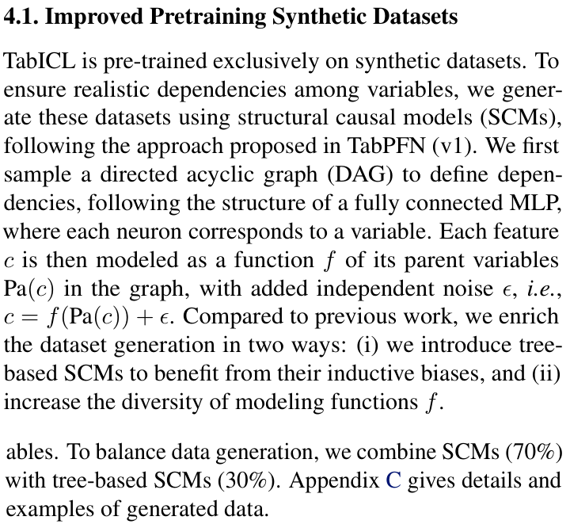
每个SCM先抽有向无环图，再由父节点计算子变量c=f(Pa(c))+ϵ。噪声ϵ独立加入。
TabICL混合70%的神经网络型SCM和30%的树型SCM，并增加非线性函数多样性。
这些是可采样的统计任务先验。使用SCM生成器不意味着模型能从观测表识别真实因果效应。
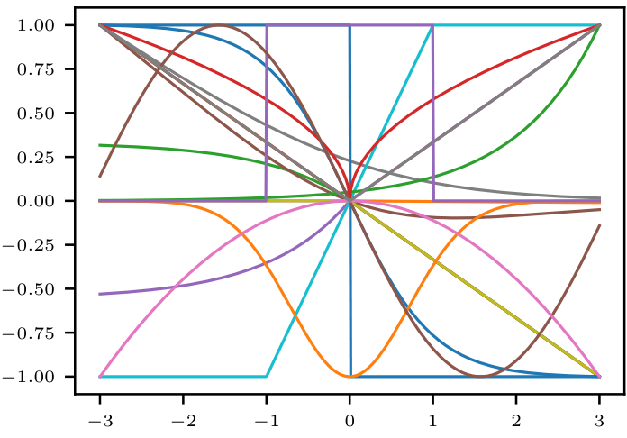
原有Identity、tanh、LeakyReLU、ELU之外，作者增加ReLU、ReLU6、SELU、SiLU、Softplus及Hardtanh等。
还包括符号、正弦、RBF、指数、平方根绝对值、区间指示、平方和绝对值，产生光滑、非单调或不连续关系。
图中为充分显示曲线，随机沿x轴或y轴翻转。展示不包含标准化和随机缩放。
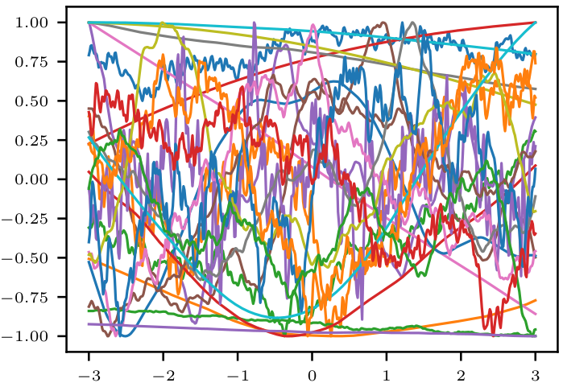
作者用f(x)=φ(x)ᵀz、z服从标准正态采样随机函数。φ由256个加权正弦特征组成。
随机频率、相位与衰减指数改变曲线的起伏及平滑程度。该类函数的采样概率是单个其他激活类型的10倍。
右图展示多条实际采样曲线，包含输入标准化。它是先验生成器展示，不是真实数据拟合效果。
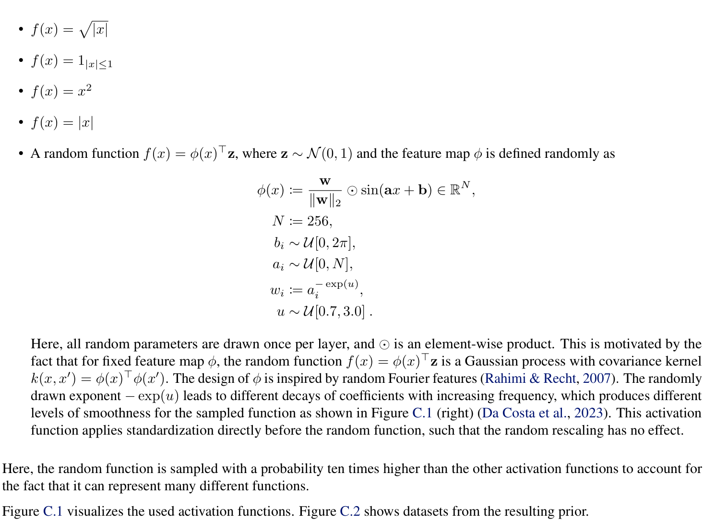
φ(x)=[w/‖w‖₂]⊙sin(ax+b)。a控制频率，b控制相位，w控制各频率的权重，N=256。
固定φ后，z的高斯采样给出核k(x,x′)=φ(x)ᵀφ(x′)的有限特征GP。每一层重新抽随机参数。
随机衰减指数改变高频权重。该构造扩大任务多样性，但无法保证覆盖具体设备的噪声和漂移。
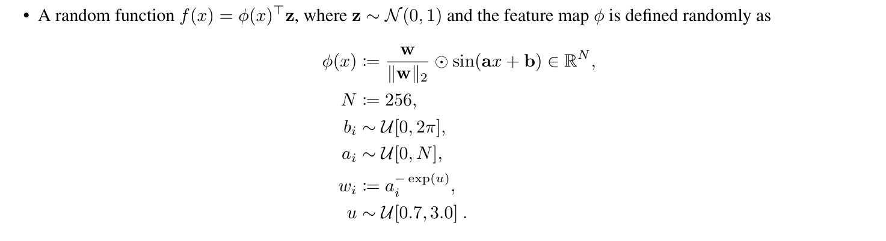
φ含256个正弦特征。b控制相位，a控制频率，w经二范数归一化后控制各频率权重；z的高斯采样得到不同函数。
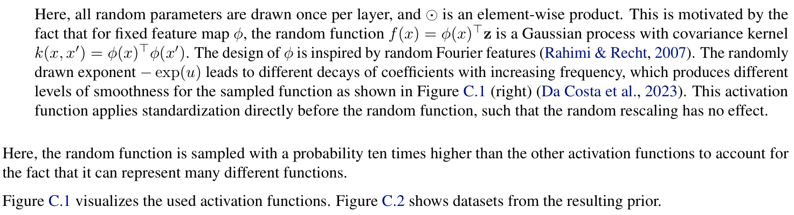
参数每层抽取一次。固定φ时，核为φ(x)ᵀφ(x′)；随机衰减指数改变平滑程度。该随机函数类型的采样概率为其他单个激活类型的10倍。
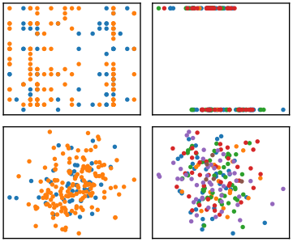
左上（1,1）：横向离散层与纵向稀疏层同时存在。右上（1,2）：两条水平带含多类重叠。
左下（2,1）：两类形成相交的斜向云团。右下（2,2）：多类在中心重叠。
颜色表示类别。每小图是独立生成的二维任务，坐标未标定物理单位。几何形态不等于真实任务准确率。
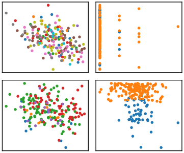
左上（1,3）：沿斜向延伸的多类混合点云。右上（1,4）：点大多落在左侧竖线。
左下（2,3）：多类在纵向长团内重叠。右下（2,4）：上方橙色与下方蓝色较分离。
颜色表示类别。每小图是独立生成的二维任务，坐标未标定物理单位。几何形态不等于真实任务准确率。
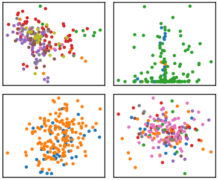
左上（1,5）：多类集中在一团斜向点云。右上（1,6）：单色点形成偏斜及稀疏尾部。
左下（2,5）：两类形成弯曲而重叠的点云。右下（2,6）：多类集中成小团。
颜色表示类别。每小图是独立生成的二维任务，坐标未标定物理单位。几何形态不等于真实任务准确率。
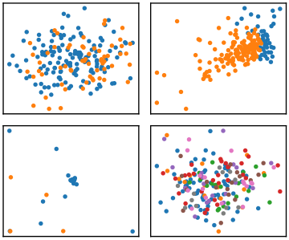
左上（1,7）：两类在中心广泛重叠。右上（1,8）：橙色点沿右上方向集中。
左下（2,7）：少量蓝色点，类别展示很稀疏。右下（2,8）：多类混合，右上出现短尾。
颜色表示类别。每小图是独立生成的二维任务，坐标未标定物理单位。几何形态不等于真实任务准确率。
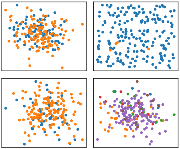
左上（3,1）：两类中心重叠，周边有离群点。右上（3,2）：蓝点分布在大范围二维空间。
左下（4,1）：两类中心密集，右侧长尾较稀疏。右下（4,2）：多类呈斜向混合。
颜色表示类别。每小图是独立生成的二维任务，坐标未标定物理单位。几何形态不等于真实任务准确率。
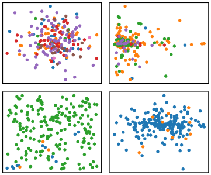
左上（3,3）：多类重叠并沿竖直方向扩展。右上（3,4）：多类集中在左侧并向右延伸。
左下（4,3）：绿色点分布广并有稀疏离群点。右下（4,4）：两类呈水平带状集中。
颜色表示类别。每小图是独立生成的二维任务，坐标未标定物理单位。几何形态不等于真实任务准确率。
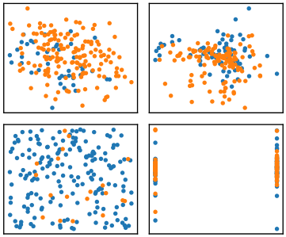
左上（3,5）：两类呈横向混合团。右上（3,6）：两类呈向右收窄的点云。
左下（4,5）：蓝点分布较广，中心较密。右下（4,6）：两条竖直线对应两组取值。
颜色表示类别。每小图是独立生成的二维任务，坐标未标定物理单位。几何形态不等于真实任务准确率。
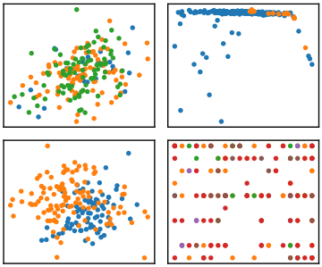
左上（3,7）：多类形成斜向团。右上（3,8）：蓝点沿上边和两侧弯曲分布。
左下（4,7）：两类高度重叠。右下（4,8）：多类落在多条水平离散层。
颜色表示类别。每小图是独立生成的二维任务，坐标未标定物理单位。几何形态不等于真实任务准确率。
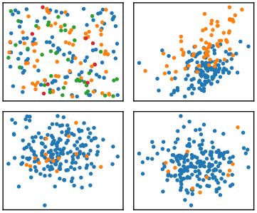
左上（5,1）：多类广泛混合，类别局部有偏聚。右上（5,2）：两类沿右上方向形成不同密度。
左下（6,1）：两类在中心大量重叠。右下（6,2）：两类形成横向密集团。
颜色表示类别。每小图是独立生成的二维任务，坐标未标定物理单位。几何形态不等于真实任务准确率。
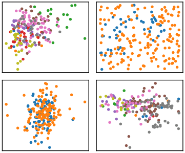
左上（5,3）：多类集中在中心并有延伸。右上（5,4）：两类近似铺满二维区域。
左下（6,3）：两类形成窄竖向团。右下（6,4）：多类横向延伸并出现离群点。
颜色表示类别。每小图是独立生成的二维任务，坐标未标定物理单位。几何形态不等于真实任务准确率。
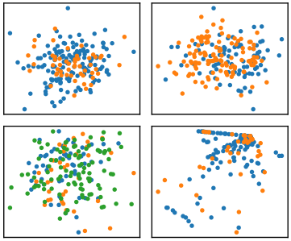
左上（5,5）：两类密集团呈斜向延伸。右上（5,6）：蓝点较多并有分散离群点。
左下（6,5）：绿色较广，其他颜色局部聚集。右下（6,6）：两类沿弯曲轨迹排列。
颜色表示类别。每小图是独立生成的二维任务，坐标未标定物理单位。几何形态不等于真实任务准确率。
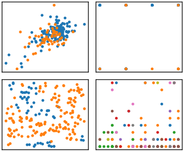
左上（5,7）：两类形成向右上方向延伸的团。右上（5,8）：少量点分散，密度很低。
左下（6,7）：两类覆盖较大范围且重叠。右下（6,8）：多类在底部水平带及少量离散点。
颜色表示类别。每小图是独立生成的二维任务，坐标未标定物理单位。几何形态不等于真实任务准确率。
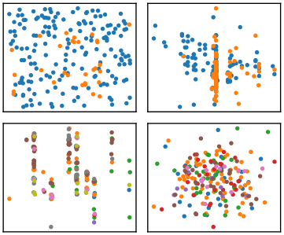
左上（7,1）：蓝色点分布广，局部橙色混入。右上（7,2）：蓝色云团与橙色竖直线并存。
左下（8,1）：多类落在几条竖直离散线上。右下（8,2）：多类形成密集团并有离群点。
颜色表示类别。每小图是独立生成的二维任务，坐标未标定物理单位。几何形态不等于真实任务准确率。
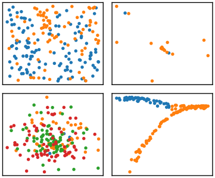
左上（7,3）：两类在二维区域广泛重叠。右上（7,4）：只有少量橙色离散点。
左下（8,3）：绿色占较广区域，其他类混入。右下（8,4）：蓝色沿顶部，橙色沿斜曲线。
颜色表示类别。每小图是独立生成的二维任务，坐标未标定物理单位。几何形态不等于真实任务准确率。
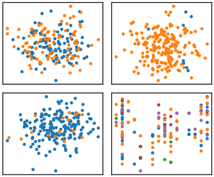
左上（7,5）：两类混合点云并有斜向尾部。右上（7,6）：橙色点占主要区域。
左下（8,5）：两类中心形成水平混合团。右下（8,6）：多类落在多个竖直层级。
颜色表示类别。每小图是独立生成的二维任务，坐标未标定物理单位。几何形态不等于真实任务准确率。
左上（7,7）：两类中心重叠，周边有尾部。右上（7,8）：多类形成紧密斜向团。
左下（8,7）：少数多类点分布于离散位置。右下（8,8）：橙色为主的多条竖直离散层。
颜色表示类别。每小图是独立生成的二维任务，坐标未标定物理单位。几何形态不等于真实任务准确率。
每层将父变量作为XGBoost输入，用标准正态随机目标拟合多输出回归器，再把拟合预测当作子变量。
树数取min{4,1+Exp(λ=0.5)}，最大深度取min{4,2+Exp(λ=0.5)}，两者独立采样，上界均为4。
这些树用于合成任务生成，不是在每个测试任务上再训练一个XGBoost分类器。
树数与最大深度独立采样，上界均为4。每层用父变量拟合标准正态随机目标，再把预测作为子变量；这是预训练数据生成过程。
左上（1,1）：两类重叠于近圆形点云。右上（1,2）：多类集中成团并局部错开。
左下（2,1）：两类广泛混合，橙色较多。右下（2,2）：多类形成左侧竖线及离群点。
颜色表示类别。每小图是独立生成的二维任务，坐标未标定物理单位。几何形态不等于真实任务准确率。
左上（1,3）：多类落在几条竖直离散线。右上（1,4）：两类集中成团并有离群点。
左下（2,3）：绿色点形成离散网格和横带。右下（2,4）：绿色点占主要区域并有长尾。
颜色表示类别。每小图是独立生成的二维任务，坐标未标定物理单位。几何形态不等于真实任务准确率。
左上（1,5）：两类近似斜向重叠。右上（1,6）：多类分布于少量水平层。
左下（2,5）：蓝色点形成中心团。右下（2,6）：两类重叠但橙色更密。
颜色表示类别。每小图是独立生成的二维任务，坐标未标定物理单位。几何形态不等于真实任务准确率。
左上（1,7）：橙色为主的水平离散带。右上（1,8）：两类分布广泛并混合。
左下（2,7）：两类中央密集并有延伸。右下（2,8）：两类在整个区域重叠。
颜色表示类别。每小图是独立生成的二维任务，坐标未标定物理单位。几何形态不等于真实任务准确率。
左上（3,1）：两类中央密集，外围较稀疏。右上（3,2）：多类沿斜向延伸。
左下（4,1）：多类均有较宽的分布范围。右下（4,2）：多类形成多条竖直离散线。
颜色表示类别。每小图是独立生成的二维任务，坐标未标定物理单位。几何形态不等于真实任务准确率。
左上（3,3）：蓝点分布较广，夹有少量橙点。右上（3,4）：多类广泛混合。
左下（4,3）：多类落在离散网格。右下（4,4）：点落在少量远离的位置。
颜色表示类别。每小图是独立生成的二维任务，坐标未标定物理单位。几何形态不等于真实任务准确率。
左上（3,5）：两类形成水平点云。右上（3,6）：两类近似覆盖整个二维区域。
左下（4,5）：两类形成斜向密集团。右下（4,6）：两类形成斜向混合团。
颜色表示类别。每小图是独立生成的二维任务，坐标未标定物理单位。几何形态不等于真实任务准确率。
左上（3,7）：两类集中在左侧竖线。右上（3,8）：绿色较广，橙色局部混入。
左下（4,7）：绿色与蓝色沿斜向不同区域集中。右下（4,8）：点在上下若干水平层分布。
颜色表示类别。每小图是独立生成的二维任务，坐标未标定物理单位。几何形态不等于真实任务准确率。
左上（5,1）：少量点呈散布和离群状态。右上（5,2）：多类混合并沿斜向延伸。
左下（6,1）：两类大范围重叠。右下（6,2）：橙色点占主要分布区域。
颜色表示类别。每小图是独立生成的二维任务，坐标未标定物理单位。几何形态不等于真实任务准确率。
左上（5,3）：左、中、右三条竖直带保持分离。右上（5,4）：橙色为主的中心团。
左下（6,3）：两类构成斜向密集团。右下（6,4）：蓝点落在多条竖直层。
颜色表示类别。每小图是独立生成的二维任务，坐标未标定物理单位。几何形态不等于真实任务准确率。
左上（5,5）：两类集中于较小的团。右上（5,6）：蓝色多条水平层夹杂橙点。
左下（6,5）：蓝与绿形成两个偏移团。右下（6,6）：多类沿斜向宽带分布。
颜色表示类别。每小图是独立生成的二维任务，坐标未标定物理单位。几何形态不等于真实任务准确率。
左上（5,7）：两类集中成团并有离群点。右上（5,8）：两类形成斜向混合团。
左下（6,7）：红色与绿色具有局部偏聚。右下（6,8）：蓝与橙集中在底部两条水平层。
颜色表示类别。每小图是独立生成的二维任务，坐标未标定物理单位。几何形态不等于真实任务准确率。
左上（7,1）：两类在二维区域广泛重叠。右上（7,2）：多类混合在中心并延伸。
左下（8,1）：两类中心混合并有稀疏尾部。右下（8,2）：多类在中心密集混合。
颜色表示类别。每小图是独立生成的二维任务，坐标未标定物理单位。几何形态不等于真实任务准确率。
左上（7,3）：两类呈横向混合团。右上（7,4）：两类广泛混合且有稀疏点。
左下（8,3）：多类集中成团且类间重叠。右下（8,4）：多类主要集中在底部水平层。
颜色表示类别。每小图是独立生成的二维任务，坐标未标定物理单位。几何形态不等于真实任务准确率。
左上（7,5）：绿色形成多个水平离散层。右上（7,6）：蓝橙点位于多个水平层。
左下（8,5）：多类在密集团内混合。右下（8,6）：两类在较大范围内重叠。
颜色表示类别。每小图是独立生成的二维任务，坐标未标定物理单位。几何形态不等于真实任务准确率。
左上（7,7）：多类集中成团并混合。右上（7,8）：蓝点分布在左右两侧的竖直带。
左下（8,7）：橙色密集而蓝点较稀疏。右下（8,8）：底部两类水平层伴少量离群点。
颜色表示类别。每小图是独立生成的二维任务，坐标未标定物理单位。几何形态不等于真实任务准确率。
阶段1：固定1,024行训练160K步，微批量4。阶段2：从1K到40K对数均匀抽样，训练2K步，微批量1。
阶段3：40K到60K均匀抽样，仅训练TFicl，其他模块冻结，共50步。每个优化步累计512个数据集。
训练特征不超过100，类别不超过10。三张40GB A100共20天，阶段分别约16、3、1天。
阶段1固定1024行训练160K步；阶段2在1K至40K间按对数均匀抽样训练2K步；阶段3在40K至60K间均匀抽样50步，只更新TFicl。
特征数不超过100，类别数不超过10。预训练采用FlashAttention和AMP，在3张40GB A100上共20天；这是预训练资源，不是单表预测时间。
纵轴为学习率，图中使用10⁻⁴量级。横轴直到160K步。曲线经历多个下降与重启周期。
短上下文阶段完成主体预训练，为列和行表示以及ICL同时建立参数。
训练成本发生在预训练端。新表预测不更新参数，不意味着完整方法没有训练成本。
阶段2使用二次多项式衰减，T=2,000步。学习率为(lrinit−lrend)(1−step/T)²+lrend。
起点2×10⁻⁵，终点5×10⁻⁶。更长上下文和更小微批量适应显存限制。
超过10K样本时启用激活检查点，并减少特征数。阶段变化同时改变多个训练条件。
图中的固定学习率为2×10⁻⁶，训练50步。数据集规模在40K与60K之间。
冻结列嵌入和行交互，保留其表示，只让最终ICL适应更长的样本上下文。
仅50个优化步仍累计很多合成任务，不能将其理解成只看50张表。
按准确率计算，TabICL平均排名11.40，TabPFNv2为6.94。排名越低越好。
TabICL排名第九，短上下文预训练尚未取得后续的整体优势。
图保留所有比较方法。新增阶段会改变各方法的相对排名，不能把固定基线的小幅排名变化当作基线重新训练改善。
保留全部方法名、平均排名及显著性连线。数字越低越好，未检出显著差异不表示方法等效。
按准确率计算，TabICL平均排名7.46，TabPFNv2为7.13。排名越低越好。
长上下文阶段后，TabICL平均排名接近TabPFNv2。
图保留所有比较方法。新增阶段会改变各方法的相对排名，不能把固定基线的小幅排名变化当作基线重新训练改善。
保留全部方法名、平均排名及显著性连线。数字越低越好，未检出显著差异不表示方法等效。
按准确率计算，TabICL平均排名6.95，TabPFNv2为7.17。排名越低越好。
最终点估计略优，但两者的显著性仍需读取连线与检验。
图保留所有比较方法。新增阶段会改变各方法的相对排名，不能把固定基线的小幅排名变化当作基线重新训练改善。
保留全部方法名、平均排名及显著性连线。数字越低越好，未检出显著差异不表示方法等效。
横轴是三个阶段，纵轴是相对阶段1的准确率变化。每点对应一个数据集，颜色编码样本数。
大样本数据通常改善更多，同时仍有落在零线以下的点。绿色三角形为均值，箱体展示分布。
因此长上下文训练的收益存在任务差异。该图没有证明每一个数据集都会改善。
先把类别分为至多10个子组，每组继续划分，直到每个叶节点包含至多10类。
内部节点预测子组概率，叶节点预测组内类别概率。某类总概率为路径上条件概率的乘积。
行表示H与TFicl参数共享，子任务使用对应训练数据及重新编码后的组标签。分层会引入错误传播。
原始模型不能直接处理超过10类。层级树先把类别分组，继续递归到叶节点内不超过10类；这是类别扩展策略，不是扩大单次预测头。
每层预测下一个分组或类别的条件概率。最终类别概率按式(7)沿路径相乘；节点对应训练标签需改为该节点的子组编号。
将12类分为A={1,…,6}、B={7,…,12}。根节点预测P(B|x)=0.4，B节点预测P(9|B,x)=0.25。
类别9的最终概率为0.4×0.25=0.10。所有叶类别概率求和应为1，只要各节点输出均规范化。
根节点若错把B压到接近0，即使叶节点很准也无法补救。类别分组是需单独验证的设计因素。
TFcol：批量对应不同特征列，序列长度对应样本数。
TFrow：批量对应不同行，序列长度对应特征数。TFicl：批量对应不同数据集，序列长度对应样本数。
调小列嵌入批量不会删除上下文样本。它只是分批处理列，随后拼回原有表示。
作者测量A100上的峰值显存，以批量、序列长度及二者乘积拟合MEM，单位MB。
列嵌入后把中间表示逐步卸载到CPU或磁盘，再按行读取。GPU省下的容量可能转移到主存和I/O。
这些拟合系数与测试硬件和实现绑定。不能直接当作其他显卡的保证上限。
列模块把b×m视为批量，行模块把b×n视为批量，最后得到b×n×4d的行表示。各模块必须分别选择可承受的批量大小。
作者在40GB A100上改变批量和序列长度，拟合峰值显存，单位MB。这些系数只支持对应硬件和实现下的批量调度，不能视为通用保证。
表格包含100K样本、500特征，80%训练、20%测试。左轴蓝线为CPU内存，右轴橙线为GPU内存。
CPU峰值约25GB，GPU小于5GB。周期性橙线来自列/行分批计算，CPU逐步积累嵌入。
横轴约20秒。该图为内存轨迹实验，不能当作200个真实数据集的平均性能。
数据规模和划分同上一页。混合精度降低GPU内存，并把这次轨迹的时间缩短到约12秒。
CPU仍需保存大量中间嵌入，峰值约25GB。图中最后阶段为单数据集ICL批次。
主基准为了可复现和一致计时，关闭了推断混合精度。不能把这张图的速度混入主基准比较。
同样500特征，80%训练、20%测试，即400K训练行。CPU峰值约120GB，GPU低于14GB。
列、行阶段完成后，ICL仍运行较长时间，整个轨迹约250秒。更少显存并未消除时间成本。
500K是资源可行性测试。论文主要准确率基准不能因此外推到所有50万行任务。
混合精度把该次轨迹缩短至约85秒，GPU峰值约10GB；CPU仍接近120GB。
论文提出可用磁盘内存映射缓解CPU需求，但本图没有给出磁盘卸载吞吐或端到端损失。
评估部署时需同时报告显存、主存、磁盘与时延，不能只用GPU峰值决定是否可用。
TALENT共200个分类数据集：120个二分类、80个多分类。作者排除TabPFNv2用于开发的15个数据集。
主比较报告171个不超过10类的数据集。图8报告12个超过10类的数据集。各图按其明确分母解读。
附录小/大数据集分组为116与53，相加169，和主比较171不一致。论文未解释差额，不能把这些分组统计直接合并。
每个数据集按64%训练、16%验证、20%测试划分。多数基线用验证集调参或早停。
TabICL和TabPFNv2只使用64%训练数据，未把验证集并入上下文。二者无需按单数据集调参。
它们同时使用32次集成，而其他深度学习基线多为单模型。双方的资源与数据利用并不完全对称。
TabICL用z标准化，选择有/无幂变换，并对列和标签重排进行32次平均。
TabPFNv2超过30K训练样本时下采样，TabICL无需下采样。两者在大样本条件下看到的数据量可能不同。
TALENT统一均值填补缺失值，未向TabPFNv2显式提供类别特征信息。作者承认这些选择可能影响对照表现。
准确率是预测正确样本数除以总测试数。ROC-AUC在二分类中衡量随机阳性得分高于随机阴性的概率，平分通常计半。
多分类AUC还依赖一对多/一对一及平均方式。本文附录图未在该处明确这些细节，复现实验需锁定基准实现。
Log Loss为真实类别概率的负对数平均，越低越好。平均排名只比较相对名次，不保留原始分数差距。
原文使用Wilcoxon–Holm检验，显著性水平0.05。超参数调优目标为准确率，LoCalPFN与TuneTables只进入准确率排名；跨指标不能直接比较同一个名次。
横轴为相对调参MLP的准确率提升，红线是跨数据集的中位数。颜色对应每千样本训练/推断时间的几何均值。
TabICL在该口径的中位相对准确率最高，平均每千样本约1.1秒。排名检验显示其与TabPFNv2的差异不显著。
其他方法的调参耗时用最佳超参训练时间×100近似，且CPU/GPU不同。图中不是完整、同硬件的总成本审计。
上半保留TabICL、TabPFNv2、检索模型与树/深度模型。各条横线展示跨数据集相对准确率分布，红线为中位数。
图例中的时间是几何平均；多数基线调参总时间用最佳训练耗时乘100近似。
TabPFN v1、LoCalPFN和TuneTables的原始计时未含推断。灰框无可比时间，不能按色标读值。
下半完整保留其余方法和不利结果。两页共用相同横轴范围及耗时色标，不能因分区而改变比较尺度。
图例中的时间是几何平均；多数基线调参总时间用最佳训练耗时乘100近似。
TabPFN v1、LoCalPFN和TuneTables的原始计时未含推断。灰框无可比时间，不能按色标读值。
横轴是单元格数量，纵轴是TabPFNv2耗时与TabICL耗时的比值。仅包含少于30K样本且至多10类的数据。
主文举例：10K行、100列时约20秒对100秒；1K行、10列时约1秒对2秒。
图中的约1.5到10倍变化是这些实现、硬件和数据集的测量，不是对任意输入的固定倍数。
作者把x=nm(n+m)作为横轴，对time=α+βx^γ拟合，两个模型均固定γ=0.8。
曲线为TabPFNv2：2.65+10⁻⁷×10.76x⁰·⁸；TabICL：1.87+10⁻⁷×2.12x⁰·⁸，单位秒。
大x时系数比10.76/2.12≈5.08。它是经验拟合外推，不是改变了理论复杂度；数据仍限于30K样本以下。
横轴为样本数，纵轴为准确率排名，越低越好。每点是一方法在一数据集上的排名。
拟合线与10%/90% bootstrap区间显示，TabPFNv2在大样本端排名变差，TabICL相对稳定。
TabICL并非每个规模都排名第一。TabR等方法在大数据准确率的平均排名还可更好，详见图I.5。
TabICL在三分类数据集上的拟合排名较差，在更多类别时没有同样一致的下降。
作者明确表示，无法确定原因是类别数本身，还是这些数据集伴随的其他属性。
各方法在同一数据集内比较，但不同类别数对应不同数据集。因此这不是只改变类别数的受控消融。
图中以特征数为横轴，对四种方法的排名作分段线性拟合。TabICL在较多特征时保持竞争力。
结果支持在这些基准上，先压缩行并未必然导致性能崩溃。
不同特征数来自不同数据集，不能断言增加无关特征会提高准确率，也未证明512维压缩无损。
横轴为类别特征占全部特征的比例。TabICL和TabPFNv2在比例较高的数据上均有一定排名变差。
图中TabICL在该区间略好于TabPFNv2，但点的离散范围较宽。
应用于仪器元数据时，应单独测试设备ID、试剂批次等类别变量。不能仅凭总体平均结果忽略类别特征处理。
作者用层级策略扩展TabICL。按平均归一化准确率，RealMLP最高，TabICL第二。
柱高未标精确数值，本图用于比较相对次序。正式PDF未给出归一化公式，纵轴不能直接当作原始准确率。
TabPFNv2原生不能处理超过10类，本图未列入其扩展版本。不能将缺席解读为已测得零准确率。
对照为加入与不加入树SCM的预训练。为节省成本，双方按阶段1设置只训练20K步，在200个数据集上比较。
多数点靠近零，但同时存在正负变化，树先验并非对每项任务都有帮助。
绿色三角形为平均相对改善。该结果支持此训练预算下的树先验增益，不能直接当作最终完整模型的单因素效应。
对照为加入与不加入树SCM的预训练。为节省成本，双方按阶段1设置只训练20K步，在200个数据集上比较。
均值方向为改善，分布仍跨越零线。AUC关注概率排序，不能等同于硬分类准确率。
绿色三角形为平均相对改善。该结果支持此训练预算下的树先验增益，不能直接当作最终完整模型的单因素效应。
对照为加入与不加入树SCM的预训练。为节省成本，双方按阶段1设置只训练20K步，在200个数据集上比较。
正向“改善”表示损失降低。图中仍有负向点，说明某些任务的概率质量变差。
绿色三角形为平均相对改善。该结果支持此训练预算下的树先验增益，不能直接当作最终完整模型的单因素效应。
先在每个数据集上按指标给方法排名，再跨数据集平均。平均排名越小越好，不等于准确率百分数。
作者使用Wilcoxon–Holm，显著性阈值0.05。连接线表示该比较程序未检出差异，不证明等效。
AUC和Log Loss排名不含只提供准确率的LoCalPFN、TuneTables，因此不同指标排名值不能直接相减解释。
TabICL平均排名6.95，TabPFNv2为7.17。数值来自本子图，越低越好。
TabICL点估计略低，论文报告两者总体差异不显著。
全部方法和显著性连线均保留。结论限于本分组及评价协议，不能把点估计差异一律表述为统计显著。
保留全部方法名、平均排名及显著性连线。数字越低越好，未检出显著差异不表示方法等效。
TabICL平均排名5.59，TabPFNv2为5.99。数值来自本子图，越低越好。
CatBoost为9.42，两种基础模型的平均排序更靠前。
全部方法和显著性连线均保留。结论限于本分组及评价协议，不能把点估计差异一律表述为统计显著。
保留全部方法名、平均排名及显著性连线。数字越低越好，未检出显著差异不表示方法等效。
TabICL平均排名4.21，TabPFNv2为4.47。数值来自本子图，越低越好。
CatBoost为8.18。该结果涉及概率评分，未直接检验校准误差。
全部方法和显著性连线均保留。结论限于本分组及评价协议，不能把点估计差异一律表述为统计显著。
保留全部方法名、平均排名及显著性连线。数字越低越好，未检出显著差异不表示方法等效。
TabICL平均排名6.32，TabPFNv2为7.10。数值来自本子图，越低越好。
TabR为9.94。平均排名反映这112个任务的结果。
全部方法和显著性连线均保留。结论限于本分组及评价协议，不能把点估计差异一律表述为统计显著。
保留全部方法名、平均排名及显著性连线。数字越低越好，未检出显著差异不表示方法等效。
TabICL平均排名4.88，TabPFNv2为5.92。数值来自本子图，越低越好。
CatBoost为9.68。AUC评价跨阈值的排序质量。
全部方法和显著性连线均保留。结论限于本分组及评价协议，不能把点估计差异一律表述为统计显著。
保留全部方法名、平均排名及显著性连线。数字越低越好，未检出显著差异不表示方法等效。
TabICL平均排名4.00，TabPFNv2为4.40。数值来自本子图，越低越好。
CatBoost为8.65。预测概率的过度自信会受到Log Loss惩罚。
全部方法和显著性连线均保留。结论限于本分组及评价协议，不能把点估计差异一律表述为统计显著。
保留全部方法名、平均排名及显著性连线。数字越低越好，未检出显著差异不表示方法等效。
TabICL平均排名8.14，TabPFNv2为7.31。数值来自本子图，越低越好。
TabPFNv2平均排名更好，RealMLP为8.27。此项结果不支持TabICL全面胜出。
全部方法和显著性连线均保留。结论限于本分组及评价协议，不能把点估计差异一律表述为统计显著。
保留全部方法名、平均排名及显著性连线。数字越低越好，未检出显著差异不表示方法等效。
TabICL平均排名6.92，TabPFNv2为6.13。数值来自本子图，越低越好。
TabPFNv2点估计更好，CatBoost与ModernNCA均为8.92。
全部方法和显著性连线均保留。结论限于本分组及评价协议，不能把点估计差异一律表述为统计显著。
保留全部方法名、平均排名及显著性连线。数字越低越好，未检出显著差异不表示方法等效。
TabICL平均排名4.60，TabPFNv2为4.60。数值来自本子图，越低越好。
两者显示相同平均排名。相同排名不表示逐数据集预测或损失完全相同。
全部方法和显著性连线均保留。结论限于本分组及评价协议，不能把点估计差异一律表述为统计显著。
保留全部方法名、平均排名及显著性连线。数字越低越好，未检出显著差异不表示方法等效。
TabICL平均排名6.27，TabPFNv2为5.07。数值来自本子图，越低越好。
TabPFNv2更靠前，ModernNCA为10.31。
全部方法和显著性连线均保留。结论限于本分组及评价协议，不能把点估计差异一律表述为统计显著。
保留全部方法名、平均排名及显著性连线。数字越低越好，未检出显著差异不表示方法等效。
TabICL平均排名4.65，TabPFNv2为3.61。数值来自本子图，越低越好。
TabPFNv2更靠前，CatBoost为10.12。
全部方法和显著性连线均保留。结论限于本分组及评价协议，不能把点估计差异一律表述为统计显著。
保留全部方法名、平均排名及显著性连线。数字越低越好，未检出显著差异不表示方法等效。
TabICL平均排名3.38，TabPFNv2为2.49。数值来自本子图，越低越好。
TabPFNv2更靠前，CatBoost为8.28。小样本不是TabICL统一占优的范围。
全部方法和显著性连线均保留。结论限于本分组及评价协议，不能把点估计差异一律表述为统计显著。
保留全部方法名、平均排名及显著性连线。数字越低越好，未检出显著差异不表示方法等效。
TabICL平均排名8.64，TabPFNv2为11.94。数值来自本子图，越低越好。
TabR为6.79、RealMLP为7.17、TabM为7.60，均排在TabICL之前。
全部方法和显著性连线均保留。结论限于本分组及评价协议，不能把点估计差异一律表述为统计显著。
保留全部方法名、平均排名及显著性连线。数字越低越好，未检出显著差异不表示方法等效。
TabICL平均排名7.67，TabPFNv2为11.18。数值来自本子图，越低越好。
ModernNCA为6.49，优于TabICL；CatBoost为8.13。
全部方法和显著性连线均保留。结论限于本分组及评价协议，不能把点估计差异一律表述为统计显著。
保留全部方法名、平均排名及显著性连线。数字越低越好，未检出显著差异不表示方法等效。
TabICL平均排名6.00，TabPFNv2为8.75。数值来自本子图，越低越好。
TabICL在此指标平均排名最好，TabR为7.31、CatBoost为8.13。
全部方法和显著性连线均保留。结论限于本分组及评价协议，不能把点估计差异一律表述为统计显著。
保留全部方法名、平均排名及显著性连线。数字越低越好，未检出显著差异不表示方法等效。
树把特征空间递归分割，每个测试样本进入各棵树的叶节点，在相应训练子集上调用基础模型。
扩展用验证表现自适应剪枝，决定采用父节点还是叶节点预测，再平均概率或logits。
对TabICL和TabPFNv2均启用该扩展，并把基础模型内部集成数设为4。它增加了训练和验证步骤。
每棵树将测试样本路由至叶节点，基础模型只处理到达该叶节点的训练子集，再跨树平均概率或logits。局部上下文减少单次ICL的样本数。
自适应剪枝按验证表现选择父节点或叶节点预测。作者将扩展同时用于TabPFNv2和TabICL，在超过10K样本的数据集上评估，两者内层集成均设为4。
53个大数据集上，TabICL平均准确率排名由9.85改善到TabICL-RF的7.73；TabPFNv2由13.43改善到9.17。
TabR为7.70，仍略优于TabICL-RF点估计。加入扩展后的方法集合改变，所以本页排名不能与图I.5直接逐项比较。
局部上下文有益，但需加上树训练、剪枝验证及集成成本后再做时延对照。
保留全部方法名、平均排名及显著性连线。数字越低越好，未检出显著差异不表示方法等效。
相对E=1，E=2、4、8、16、32的平均准确率改善依次为0.32%、0.64%、0.68%、0.74%、0.76%。
对应中位改善为0.18%、0.24%、0.27%、0.30%、0.26%。图中均值与中位数不同。
这些是相对改善，不是百分点。扩大集成增加推断计算，收益逐渐减小。
E=2、4、8、16、32的平均相对准确率改善为0.10%、0.44%、0.61%、0.72%、0.75%。
中位改善依次为0.00%、0.06%、0.10%、0.15%、0.15%。原文认为可察觉收益需要更大集成数。
作者对两模型差异给出预处理和成员相关性的解释，但未单独控制这些因素证明因果。
这15个数据集曾用于TabPFNv2超参、早停或模型选择，故作者从主比较中排除。
表F.1仍报告它们的准确率、AUC和Log Loss，保留不利于TabICL的结果。
不能把这些开发集成绩混合进主测试平均值，也不能仅据此评价未见任务泛化。
这些数据曾参与TabPFNv2的调参、早停或模型选择。作者把它们排除在主文比较之外，并在表F.1另行报告，避免把开发反馈与独立测试混为一谈。
前五行含allbp、baseball、delta_ailerons、eye_movements和eye_movements_bin。
eye_movements的准确率：TabICL 0.639、TabPFNv2 0.788、TabR 0.970、ModernNCA 0.986。这是明显不利于TabICL的案例。
同一任务的三个指标分别保留，不能用某一列代替整项评价。
中间五行含heloc、hill-valley、JapaneseVowels、led24、national-longitudinal。
hill-valley的准确率：TabICL 0.785，TabPFNv2 0.983；Log Loss分别0.518和0.098。
JapaneseVowels的准确率均接近1，概率损失仍不同。高准确率不代表概率完全相同。
最后五行含page-blocks、ringnorm、rl、thyroid-ann、waveform-5000。
rl准确率为TabICL 0.763、TabPFNv2 0.860、TabR 0.878、ModernNCA 0.837。
waveform-5000中TabICL准确率0.872，高于TabPFNv2的0.865。开发集也并非单一方向。
同样前五行，这里展示RealMLP、TabM、CatBoost的完整结果。
eye_movements中TabM准确率0.994、Log Loss 0.043；eye_movements_bin的RealMLP Log Loss为2.244。
负面概率结果必须保留，说明准确率与Log Loss可能给出不同评价。
同样中间五行，这里保留另外三种方法，不省略重复数据集名。
hill-valley的RealMLP准确率0.796、TabM 0.512、CatBoost 0.517。该任务中方法差异很大。
national-longitudinal多项准确率达到或接近1。四舍五入后的0.000损失不应解释成数学上的绝对零。
同样最后五行，表F.1的15×7×3个数据值至此完整覆盖。
thyroid-ann的CatBoost准确率0.995、Log Loss 0.012；waveform-5000准确率为0.860。
表中比较是已知开发集上的描述。研究结论仍以隔离的测试数据与预先规定指标为准。
原始TabICL仅支持分类。本文没有回归、检测限或真实微生物定量实验。
RoPE损失严格列排列不变性。多类别、小数据、较高类别特征比例等条件下仍有劣势或不稳定性。
基准包含单模型与集成、CPU与GPU、完整上下文与下采样等不同设置。平均性能不能替代部署条件下的受控复验。
原始TabICL仍有推断成本，本文仅实现分类。RoPE让模型依赖列位置，不能保证严格的列排列不变性；TALENT的单模型评估设置也影响结论。
交叉验证集成会改变性能和计算预算。基准采用均值填补，也没有显式给TabPFNv2提供类别特征信息；这些选择可能影响不同模型的相对表现。
可把光谱通道、散射特征或图像统计量作为列，把样本类型或微生物类别作为标签。前端表示先不读标签。
同一批特征可复用于不同分类粒度，例如阳性/阴性与物种层级分类。层级类别扩展提供了直接的实现思路。
这是基于机制提出的研究方案。原论文未证明它对光学设备或微生物检测有效。
固定同一训练/测试划分，比较TabICL、TabPFNv2、CatBoost及一个有竞争力的表格深度学习模型。分别报告不调参和等预算调参结果。
单独比较是否使用设备噪声先验、RoPE、层级类别扩展，保持其他训练预算和数据不变。
按设备或采集日期留出测试，控制上下文样本数与集成数，计入预训练、任务适配及推断的分项成本。
除准确率、AUC和Log Loss外，预先指定低假阳性率下的灵敏度，以及独立测试集上的概率校准。
比较跨批次、跨设备和不同干扰物条件，报告各组样本量和置信区间，不只报告总体均值。
若目标是浓度估计或检测限，需要另建回归或统计检测模型，不能直接套用原始TabICL的分类结果。
TabICL通过列分布表示、行压缩与最终ICL，把大样本注意力的列数因子去掉，同时保留任务上下文预测。
课程训练与树先验在本文实验中提供增益，但部分小样本、多分类及开发集仍出现不利结果。
对设备研究，优先检验跨批次表示、层级标签复用和完整资源成本，而不是预设基础模型一定更好。
列分布编码与行压缩
长上下文仍有二次成本
小样本与多类仍有劣势
设备应用须独立验证